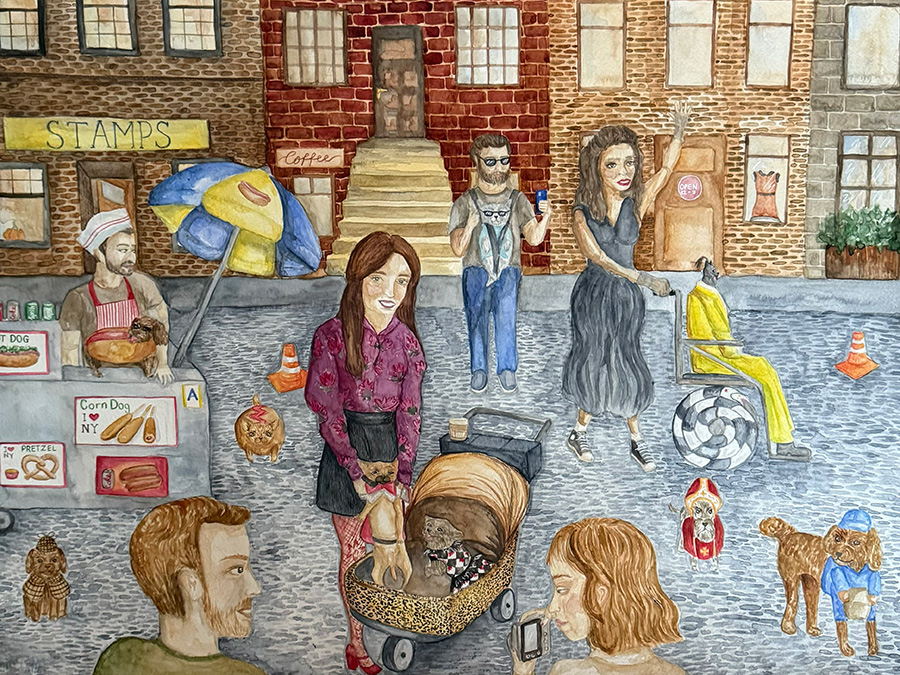
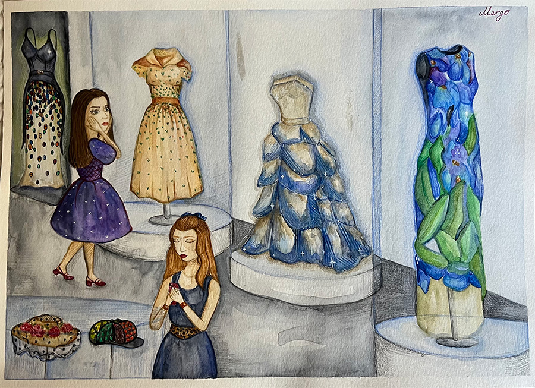

Illustration

Jazz Club in Williamsburg – A lively watercolor illustration capturing the warm, musical atmosphere of a jazz night in Brooklyn.

Tompkins Square Park Dog Parade – A hand-painted piece inspired by the colorful and joyful annual dog parade in NYC.

The Metropolitan Museum of Art – A watercolor scene depicting a peaceful autumn day outside the iconic Met steps.